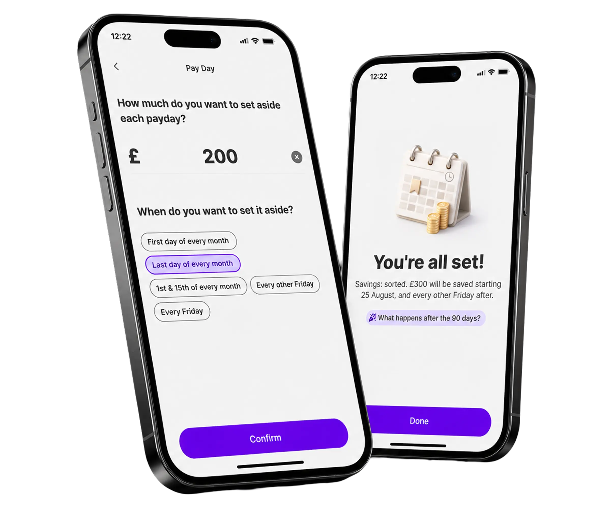
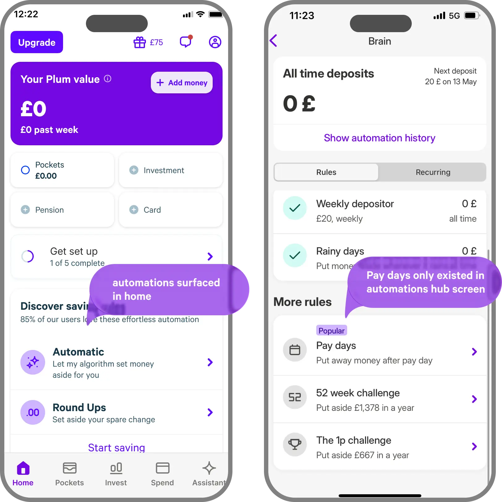
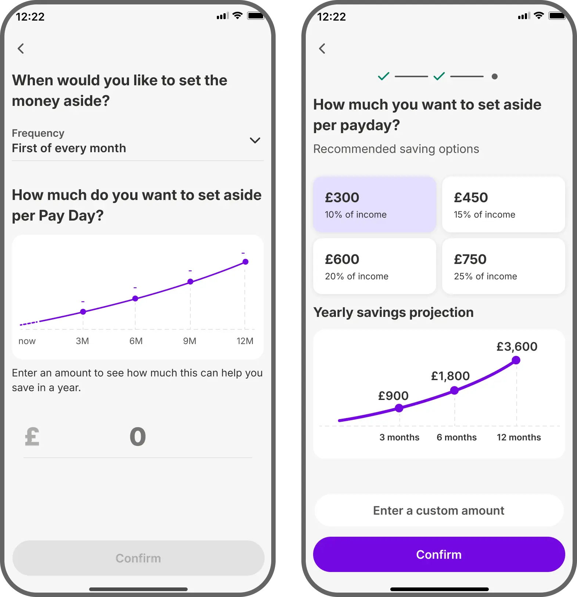
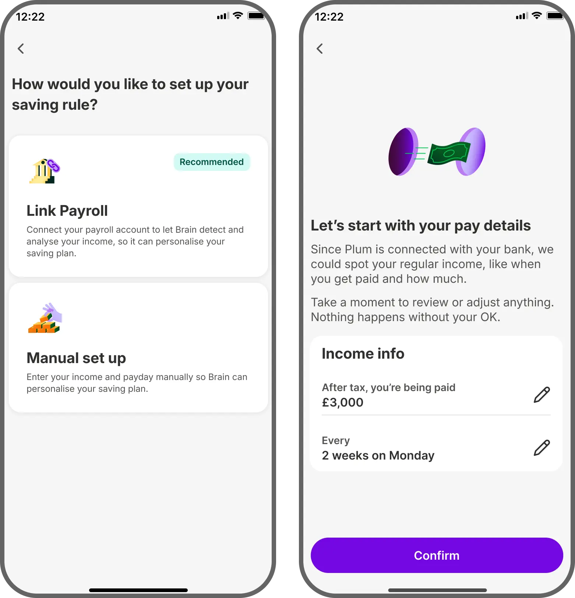
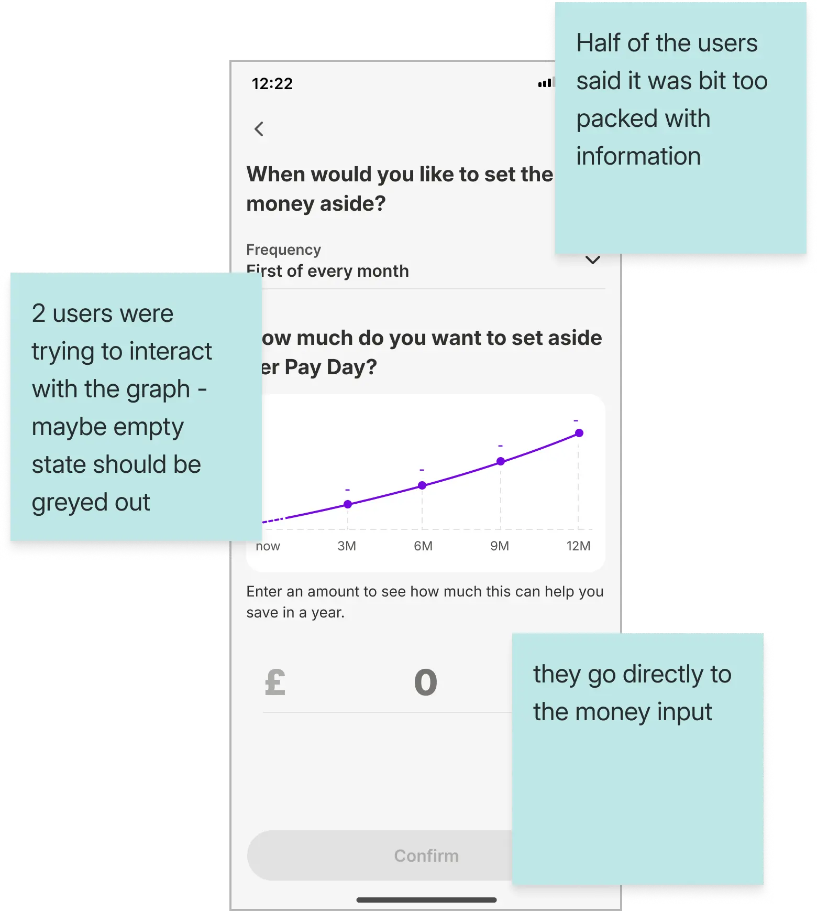
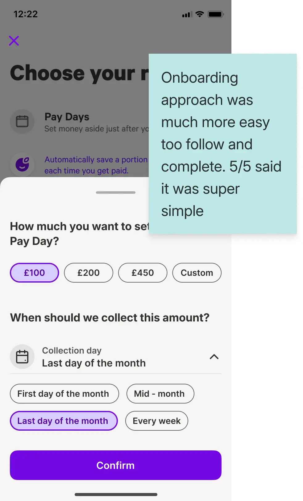
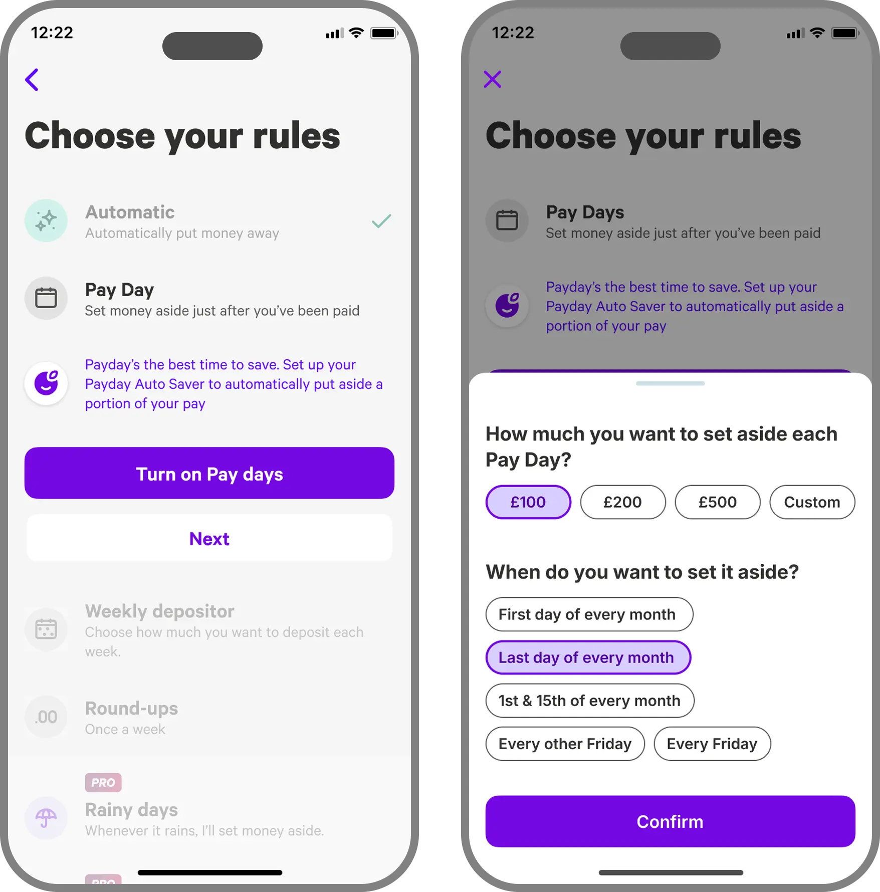
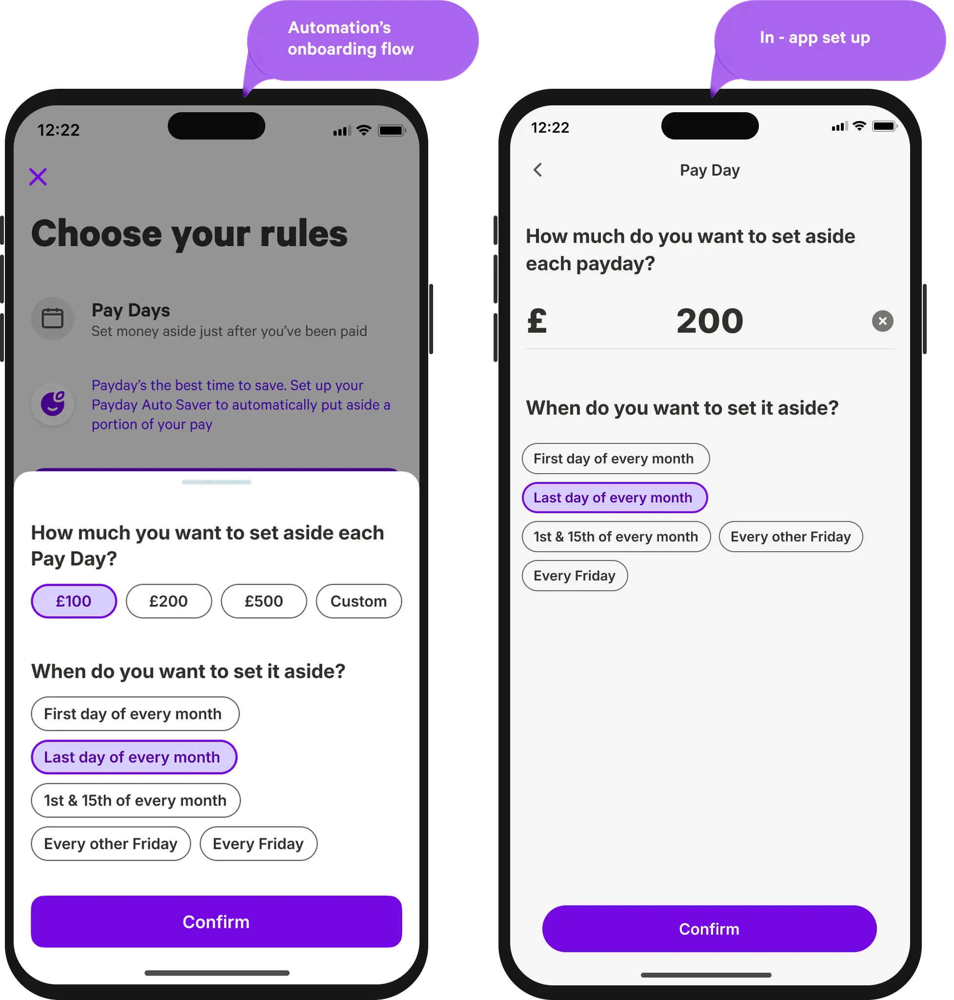

This project started as part of a wider refactor of Plum’s automation rules, following changes in the design system.
For Payday, we went further than a visual refactor. It was Plum’s highest-impact saving rule, with users saving around £80 each month on average.
The opportunity was not creating demand. It was removing friction from discovery and setup.
Payday had the most complex setup of all saving rules, with multiple inputs required. Only 35% of users who started setup completed it, the worst conversion across all rules.
Payday was not present in onboarding, where automation habits are most likely to form. It was also less visible than Automatic and Weekly, which were surfaced by default.

Move Payday from a high-value but underused rule into a core saving habit.
For the business, this meant growing Payday share from 45% to 50% of automation-active users, while increasing deposits and AUM.
For users, this meant making Payday easier to discover, quicker to set up, and less effortful to trust.
250K+ users had already enabled Payday without onboarding, and 7 out of 10 interview participants were already using it.
That told us the problem was not demand. It was activation.
Source: Automation usage data and New Pockets interviews.Payday had the longest setup of any savings rule, and only around 30% of users completed the flow.
Confidence and ease of setup also scored only average, showing that automation setup still felt harder than it should.
Source: Setup funnel data, SUS survey, and app usability study.Changing the Home entry point reduced Payday conversion from 33% to 26%, even before users reached setup.
That showed surface and framing could influence behaviour as much as the flow itself.
Source: Adoption analysis and pre-launch funnel data.We explored the most effective setup experience for Payday, comparing manual setup, contextual nudges, and bank-linked autofill to minimise effort and maximise adoption.


We conducted a moderated usability study with 6 participants recruited through Useberry, all of whom were new to Plum, to evaluate the redesigned setup before implementation.
Users found the setup flow easy once they reached the right screen.
The setup screen was mostly clear, but some users felt it was slightly too packed with information.
The main friction was not the flow itself, but making Payday easier to notice and access.

Users rated the onboarding Payday flow as very easy to complete.
The setup screen was clearly understood by all participants.
Trust around financial data remained the main question, especially around provider familiarity and data analysis.

Why: We believed fewer decisions would increase completion.
We reduced setup to two inputs, cutting the average setup time in half with smart defaults and a simpler flow.
Why: We believed earlier visibility would increase adoption.
We introduced Payday in the onboarding automation step.

Why: We believed consistency would reduce uncertainty.
We aligned the onboarding and in-app setup patterns.

The honest miss: setup conversion improved, but stayed relatively low. It showed that simplifying the flow was not enough on its own.
Simplifying setup helped, but only after users reached the flow.
Next time, I would spend more time finding the best moment to nudge users to automate.
Adding Payday to onboarding helped, but onboarding is only one fixed moment.
Next time, I would explore behavioural prompts based on when users get paid, save manually, or show repeated saving intent, instead of relying only on static app surfaces.